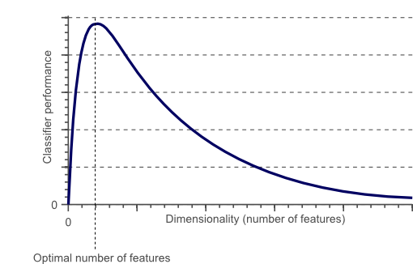

Principal component analysis (PCA) is one of a family of techniques for taking high-dimensional data and using the dependencies between the variables to represent it in a more tractable, lower-dimensional form, without losing too much information. It
is one of the simplest and most robust ways of achieving dimensionality reduction.
Why is Principal Components Analysis required ?
If we keep on increasing the number of features in the data, A phenomenon known as the Curse Of Dimensionality begins to occur. So the idea is that the more features that we have, the more complicated our numerical computations become. This means that
the performance of the machine learning algorithms, which are mathematical computations on the data, will be affected. Each added variable results in an exponential decrease in predictive power.

Random Data
Consider a random dataset consisting of 3 different classes of 30 sample points each where each sample point has 3 features. So, the dataset consists of 90 points with 3 features each. The points have been randomly chosen. When
you run the PCA, you’ll see the first component points in the direction that accounts for the most variation in the n variable space. The second component finds the next direction, perpendicular to the first, that has the second
most variation and so on.
Using Original AXES
Using PRINCIPAL COMPONENTS
Adding an Outlier
Because the PCA minimizes the L2 norms (i.e. quadratic norms) it has the same issues that least-squares or fitting a Gaussian has by being sensitive to outliers. Because of the squaring of the large deviations from the outliers,
they will dominate the total norm and therefore will drive the PCA components.
Using Original AXES
Using PRINCIPAL COMPONENTS
Using MOON dataset
The “classic” PCA approach described above is a linear projection technique that works well if the data is linearly separable. However, in the case of linearly inseparable data, a nonlinear technique is required if the task is
to reduce the dimensionality of a dataset. The basic idea to deal with linearly inseparable data is to project it onto a higher dimensional space where it becomes linearly separable. Here we apply a Gaussian/RBF kernel to separate
the data. where γ=1/2σ2 is a free parameter that is to be optimized.
Using Original AXES
Using Linear PCA
Using Kernel PCA
Using IRIS dataset
The Iris dataset is a multivariate dataset consisting of 50 samples from each of the 3 species of Iris.
Iris setosa
Iris virginica
Iris versicolor
For the purpose of identifying features that would help to separate and classify them, four features were measured for each sample.They were